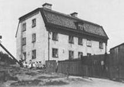
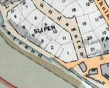
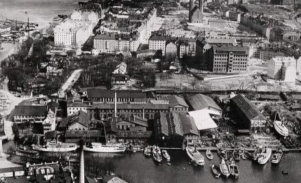
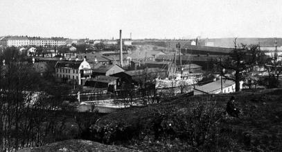
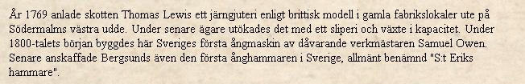
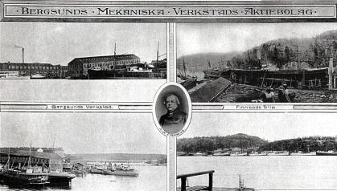
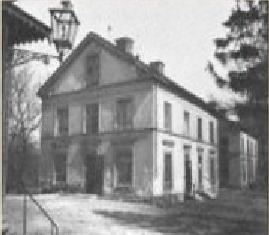
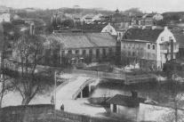
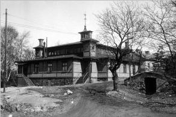

Södermalm i tid och rum. Stockholm
|
   Bostadshus i kvarteret Slipen år 1908 Bostadshus i kvarteret Slipen år 1908
Från CD:n Söder i våra hjärtan Thomas Lewis, som närmast kom från Göteborg, där han också inrättat ett järngjuteri, var troligen den förste i landet att använda sandformar i stället för den hittills brukade, betydligt långsammare och kostbarare metoden att gjuta järnet i lera. Även i fortsättningen skulle Bergsund ligga i täten med epokgörande nyheter. 1807, samma år som Samuel Owen anställdes som förste mästare vid modellverkstäderna här, levererade bruket vår första svenskbyggda ångmaskin. Adressen var Dannemora, men ångmaskinen kom sedermera tillbaka till Stockholm och användes vid en klädesfabrik. |
  Bergsunds Mekaniska Verkstads AB 1921-30 Bergsunds Mekaniska Verkstads AB 1921-30
År 1860 hade Bergsunds bruk 525 arbetare och var Stockholms största i branschen. Företaget ägdes då sedan två år av grosshandlaren A. V. Frestadius. |
|
  Utsikt mot Bergsund från Reimersholme 1901-21 Utsikt mot Bergsund från Reimersholme 1901-21
|
Den tidigare tillverkningen, som hade varierat
från ångmaskiner och järnstaket (»järngallret i militärstil» framför Artillerigården göts vid Bergsund
1816) till slipade stålknappar och värjfästen, hade vid denna tid alltmera koncentrerats till ångfartyg.
Några månader innan Frestadius övertog ledningen inträffade för övrigt en uppmärksammad olycka, när en otillräckligt nitad panna exploderade på ångfartyget »Oskarshamn» och bröt sönder den just leveransklara båten, som blev vrak i Pålsundskanalen alldeles utanför Bergsunds knutar. Från sådana olyckshändelser förskonades företaget under den nye ägaren, som med hjälp av ingenjörerna Ollman och K. A. Lindvall gjorde Bergsunds namn känt långt utom landets gränser. Här byggdes John Ericsson-monitorer och kustångare, finska isbrytare och oljebåtar för Kaspiska havet. Naturligtvis var pressen representerad på de stora stapelavlöpningarna, och även sedan båtarna börjat gå i trafik blev de föremål för tidningsskrivarnas beundrande uppmärksamhet. |
|
 |
 
|
I och med O Telander och A P L Hammars köpr av verkstaden på 1840-talet inleddes skeppsbyggarepoken. Affärerna gick mycket bra. Man tillverkade ångare med järnskrov och hade 100-talet arbetare. Denna mycket starka expansion krävde dock mer kapital, vilket ägarna saknade och det blev konkurs, rekonstruktion och en ny ägare, A W Frestadius. Efter hans död 1867 ombildade hans arvingar firman till aktiebolag.
|
 Edward Blom. Från CD:n Söder i våra hjärtan |
1875-1890 var C A Lindvall verksamhetschef och det är från honom Lindvallsgatan och Lindvallsplan fått sina namn. Vi denna tid råpdde högkonjunktur inom sjöfartsnäringen och produktionen var stor. För att kunna bygga båtar större än Stockholms sluss tillät, anlade man även filialen Finnboda slip ute vid Saltsjön.
Även om varvet var bolagets viktigaste näring, hade man också annan betydande verksamhet, t ex brobyggande, vilken i takt med järnvägens utbyggnad ökade alltmer. Vid 1900-talets början investerade man i nya fabriker och började tillverka de kända råoljemotorerna. Via olika affärer hade Bergsunds på 1910-talet lyckats bli kärnan i Sveriges största verkstadskoncern.. Tyvärr vidsade sig denna konstruktion inte vara lönsam, så fem år senare upplöstes den åter. 1916 såldes Finnboda till rederi Svea, och kort därefter började varvet få stora förluster. 1924 gick det i likvidation. Men även denna gång lyckades det att rekonstruera företaget (efter att ha sålat av den vinstgivande motortillverkningen) och Bergsunds mekaniska verkstad höll sig levande fram till år 1929, när hela industriområdet revs, för att nya gator skulle dras fram och nya hus byggas. |
Förutom ångbåtar hade Bergsund ytterligare en specialitet, brokonstruktioner, År 1905 hade man härifrån levererat 762 järnvägs- och landsvägsbroar till staten och enskilda företag. Också Stockholms stad hörde till beställarna. Järnvägsbron vid Liljeholmen, för att ta ett nära liggande exempel, göts vid Bergsund på 1850-talet.
|
  Bergsund från Reimersholme Bergsund från Reimersholme
|
Bergsunds mekaniska verkstad, aktiebolag sedan 1870, drevs fram till 1929, då rörelsen lades ned. Finnboda varv hade redan 1916 sålts till Stockholms Rederiaktiebolag Svea. Maskinhallar och gjuteriverkstäder revs, den gamla disponentbostaden från Thomas Lewis' tid försvann liksom kontorsbyggnaden med dess rikhaltiga modellsamling, och i stället växte våra dagars Bergsundsområde fram. |
 |